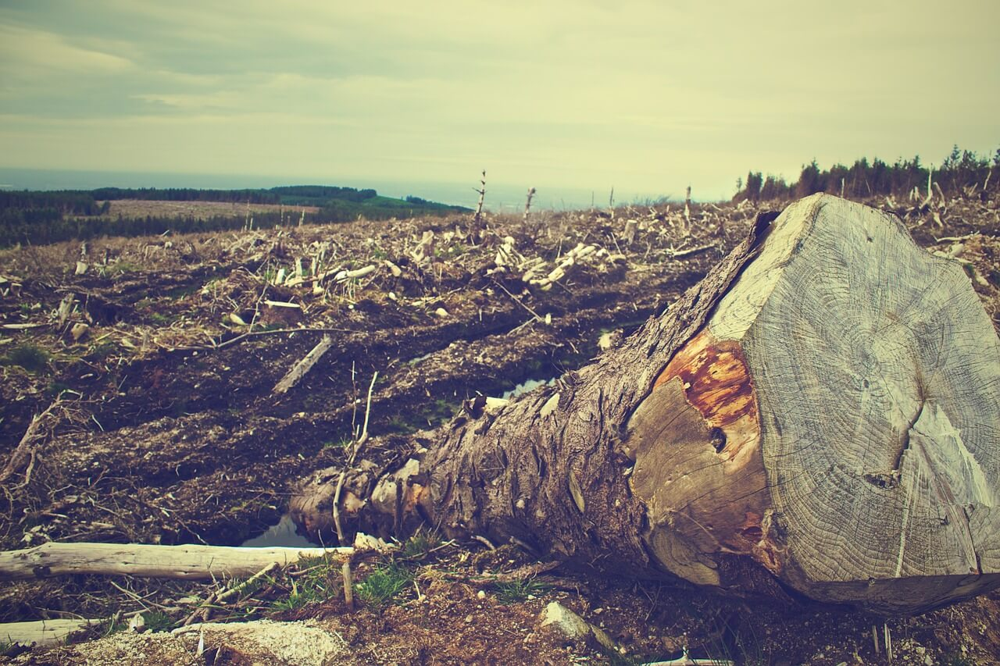

¿Qué es la deforestacion?
La deforestación arrasa los bosques y las selvas de la Tierra de forma masiva causando un inmenso daño a la calidad de los suelos. Los bosques todavía cubren alrededor del 30 por ciento de las regiones del mundo, pero franjas del tamaño de Panamá se pierden indefectiblemente cada año.
Las selvas tropicales y los bosques pluviales podrían desaparecer completamente dentro de cien años si continúa el ritmo actual de deforestación.

Los motivos de la tala indiscriminada son muchos, pero la mayoría están relacionados con el dinero o la necesidad de los granjeros de mantener a sus familias. El inductor subyacente de la deforestación es la agricultura. Los agricultores talan los bosques con el fin de obtener más espacio para sus cultivos o para el pastoreo de ganado. A menudo, ingentes cantidades de pequeños agricultores despejan hectáreas de terreno arbolado, para alimentar a sus familias, mediante tala y fuego en un proceso denominado «agricultura de roza y quema».
Las operaciones madereras comerciales, que proporcionan productos de pulpa de papel y madera al mercado mundial, también participan en la tala de innumerables bosques cada año. Los leñadores, incluso de forma furtiva, también construyen carreteras para acceder a bosques cada vez más remotos, lo que conlleva un incremento de la deforestación. Los bosques y selvas también caen víctimas del crecimiento urbano constante.
¿Cuáles son las consecuencias de la deforestación?
1- Los incendios provocados.
2- La tala de árboles sin control.
La deforestación causa unos daños terribles en los ecosistemas, además de una gran pérdida de biodiversidad y aridez del terreno. Se evita la fijación de dióxido de carbono (CO2) por lo que se contribuye al cambio climático.
Las regiones que sufren la deforestación tienden a generar una erosión del suelo para convertirse, finalmente, en tierras no productivas.